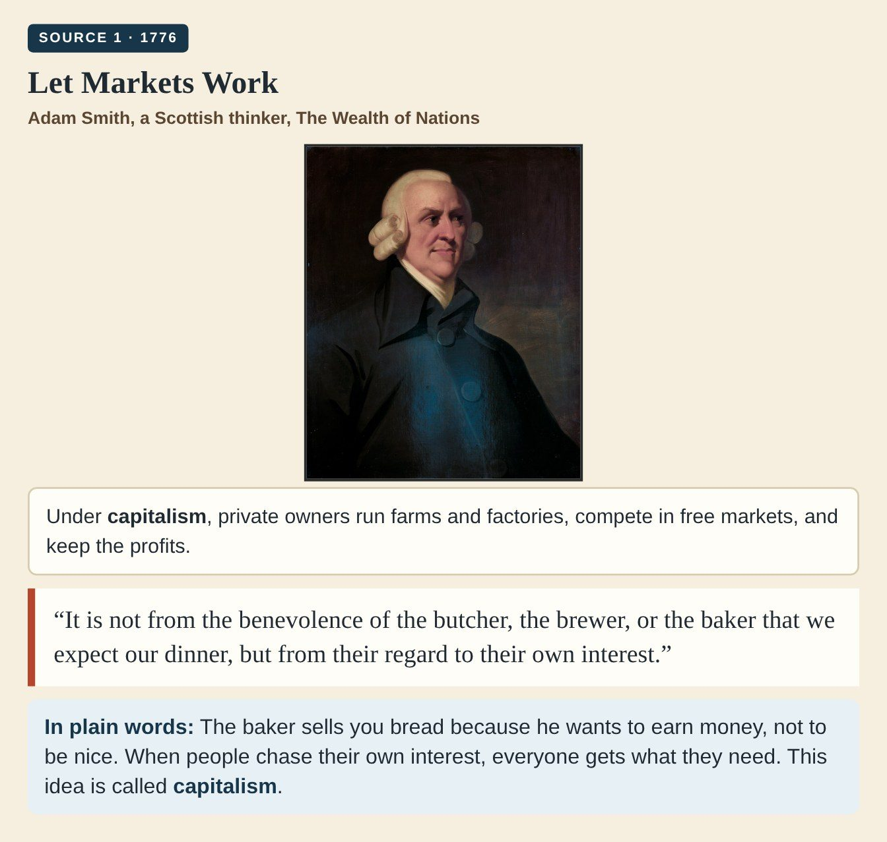

How it works: read the source pages → answer the question about today's big idea → read the fact file → write 1–2 sentences. Done = all parts green, then turn in at the bottom.
Word help (tap to open)
- Capitalism = private owners run businesses for profit
- Socialism = workers or the government share ownership of big industries
- Communism = workers take over, and all property is shared
- Proletarians = Marx's word for workers who own nothing but their labor
- Primary source = something made by people who lived at the time: a letter, a speech, a picture, a law

Click the page to make it bigger.
Turn in your work
Your work saves on this device, so you can come back later. Your teacher sees it after you turn it in.
Sources: Adam Smith, The Wealth of Nations (1776); New Lanark mills (engraving, 1818); Friedrich Engels, The Condition of the Working Class in England (1845, 1887 translation); Karl Marx and Friedrich Engels, The Communist Manifesto (1848, 1888 translation). Images public domain, via Wikimedia Commons.